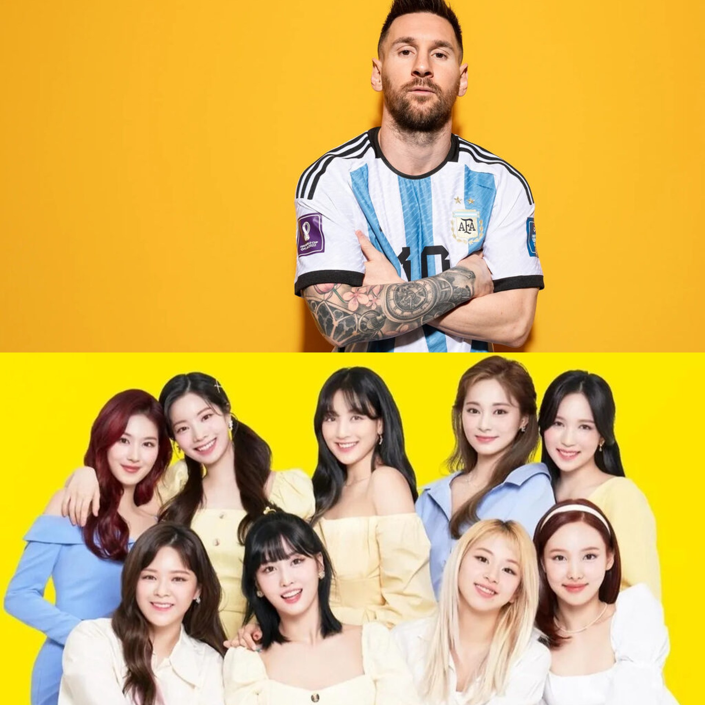

Messi y el gran giro de su carrera
Lionel Messi, el famoso jugador de fútbol, ha sorprendido al mundo al anunciar que inicia una nueva carrera como ídolo de K-pop. A través de sus redes sociales, el argentino reveló su interés en la cultura pop coreana y su deseo de unirse al mundo del entretenimiento. El anuncio ha causado revuelo entre los fanáticos del K-pop, quienes han recibido con entusiasmo la noticia. Se espera que Messi trabaje con algunas de las compañías de entretenimiento más importantes de Corea del Sur para producir su música y crear contenido visual que le permita llegar a un público más amplio.
"Siempre he sido un gran fan del K-pop, especialmente de los grupos femeninos como BLACKPINK y TWICE", dijo Messi en una entrevista. "Espero poder aprender de los mejores de la industria y crear música que hable de mi experiencia como futbolista y como persona".
La noticia ha generado una gran cantidad de comentarios en las redes sociales, donde los fans del K-pop han compartido sus opiniones sobre el nuevo proyecto de Messi. Muchos han expresado su emoción y han dicho que están ansiosos por escuchar su música y ver sus videos. Messi, quien es considerado uno de los mejores jugadores de fútbol de todos los tiempos, ha estado buscando nuevas formas de expresarse y de llegar a su público. Con su nuevo proyecto de K-pop, espera demostrar que puede ser exitoso en cualquier campo que se proponga. Aunque algunos fanáticos del fútbol han expresado su preocupación por el tiempo que Messi dedicará a su nueva carrera de K-pop, el jugador ha asegurado que su compromiso con el fútbol no disminuirá y que seguirá trabajando duro para mejorar su desempeño en la cancha. Se espera que el primer sencillo de Messi como ídolo de K-pop se lance en los próximos meses, lo que sin duda será un evento muy esperado por sus fanáticos de todo el mundo.